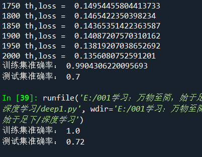

考研之前就可以选题了，本来想考研后再选，但是学校太push，怕没有题目了先占个坑，一不小心选了神经网络和医工融合的
考完研（目测已凉......)想退导师已经拉群了，只能硬着头皮上了。这几天看了一下神经网络，了解了点基础知识，找网上
的数据集照葫芦画瓢的写了一个只有一个神经元的网络（单细胞生物orz)，没有调用TensorFlow，PyTorch等框架，纯numpy
实现，主要是为了了解原理没有上框架（其实是不会框架目前......)
训练集是209张64643的含有动物的照片（.h5文件），测试集样本容量则是50
环境：windows + anaconda下spyder，自然，使用Python语言
每一个像素作为一个特征点，一张照片的特征是特征点构成的特征向量X，对应一个权值向量W
z = wx + b
sigmoid = 1/(1+e^(-z))
loss使用交叉熵损失
计算dw,db
w = w - rdw
b = b - r*db
反复使用上述神经网络前馈+反馈公式直到达到收敛效果即可
def sigmoid(w,x,b):
z = np.dot(x,w) + b
a = 1/(1 + np.exp(-z))
return a
def parameterInit() :
w = np.zeros((12288,1))
b = 0
time = 20000
r = 0.005
return w,b,time,r
while(t <= time):
A = sigmoid(w,trainSetX,b)
loss = -np.sum(trainSetY*(np.log(A)) + (1-trainSetY)*(np.log(1-A))) / n
dz = A - trainSetY
dw = (np.dot(trainSetX.T,dz)) / n
db = np.sum(dz) / n
w = w - r*dw
b = b - r*db
if(t%100 == 0) :
print(t,"th,loss = ",loss)
t = t + 1
学习率为0.05与0.07下训练2000次的效果:

只有一个神经元这样的效果也还行
见文件deep1.py